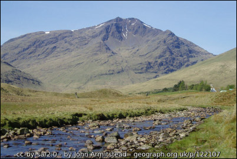
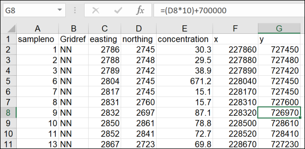

Using GIS for analysis
The background to using GIS for analysis will be covered in the lecture segment at the beginning of the class, and the presentation and any other supporting materials will be available in Minerva. The lecture segment should help you to understand why you are doing these exercises. If you still aren’t sure, please ask Clare.
Learning outcomes
When you have completed this section of the workbook you should be able to
- demonstrate how to select and analyse point sampled spatial data
- select appropriate tools to carry out geoprocessing tasks
Introduction
The glen of the River Cononish near Tyndrum in Scotland has historically been a lead and gold mining area. Using data from stream and soil samples we will look at ways of processing and displaying point sampled data in ArcGIS to investigate possible lead contamination.

The techniques in this chapter will give you an introduction to carrying out analysis in GIS and can be used for a wide variety of data, not just the geochemical data that we use here.
Data to download
Geochemical data
You will create the map yourself, but the data, which consists of a spreadsheet and a shapefile which outlines the study area, can be downloaded from Minerva.
- Download
CononishData.zipfrom Minerva.
The data was collected as part of a student project in 2009 and is presented as an Excel spreadsheet which gives you details of the locations of the stream and soil samples and the lead concentration (in parts per million - ppm) in each sample. The spreadsheet has been cleaned up to make it possible to import it into GIS.
Map data from Digimap
Using Digimap OS Download download the following data:
- OS 1:25 000 Raster for at least the area shown in the image below. You should search for
Cononish.
Setting up your map
You will set up this map from scratch. If you can’t remember how to do this refer back to the instructions in the chapter on Finding data and adding it to Arc.
- Open ArcGIS Pro and create a new project called
Cononish - Move the files that you downloaded from Minerva into the project folder and make sure that you have unzipped them.
- Move the files that you downloaded from Digimap into the project folder and make sure that you have unzipped them.
- Add the
1:25 000 rastertile(s) from Digimap to your map. - It is a good idea to check that the coordinate system of your map has been set to British National Grid.
- It probably won’t have been set as the 1:25 000 raster data doesn’t have the coordinate system set, so adding this layer to the map first doesn’t change it to British National Grid.
- So set the coordinate system of the map to
British National Gridnow.
- Use the ESRI base map to check that the 1:25 000 raster layer is in the correct place
- Then it is also a good idea to remove the default ESRI base map layers, which in a new project are usually the World Topographic Map and the World Hillshade. These can cause your map to slow down and/or crash.
Importing xy data
The next thing we will do is to add the data from the Excel file to Arc. This is a form of what can be called xy data because the file contains the x and y coordinates for locations as well as other data.
If you haven’t already, download the CononishData.zip file from Minerva, unzip it into the project folder
- Open the Excel spreadsheet,
XYZ_Pb.xls, to have a look at the data.
Preparing the spreadsheet
You have a file which includes grid references for the British National Grid (these are the columns headed Gridref, eastings and northings) and lead concentrations from soil and stream samples in parts per million (ppm) (the column headed Pb_conc).
Warning
Note that column headings must be short and contain no spaces or non-standard characters if you want to import a spreadsheet into Arc. So text, numbers and underscore characters only. Have a look at your table and edit it before importing into Arc to check that this is the case.
In particular notice the eastings and northings columns which show the grid reference. These are in British National Grid 1 m coordinates.
We’ll need to do some work to make these suitable for importing into Arc. If you import the spreadsheet as it is these coordinates will leave your data somewhere in the sea south west of Cornwall.
Note the column Gridref - that tells you which 100 km grid square the references are in, NN in this case. Unfortunately Arc won’t read these so you need to convert the references.
British National Grid 100 km squares
British National Grid references are most commonly given in the form NN6005,2674, with grid letters at the start to give the 100 km grid square. These letters need to be replaced by numbers if the grid references are to be read by ArcGIS.
If you are given a reference that does not include the grid letters but consists entirely of numbers it is worth checking whether the grid numbers make sense. Of course, it may just mean that the person who created the references forgot about the letters, in this case the reference could refer to any of the 100 km squares covering the UK - not helpful!
Replacing 100 km grid letters with numbers
Follow the example below, then have a go for yourself with the examples provided.
Using the example SK 6005 2674 (note that this is not Cononish)
- find the number of the line to the left of the grid square in the image above (i.e. one of the numbers from the line at the bottom of the map) - for SK this is “400” - so write it down as
4. - This number will apply to all of the references in the eastings column of the spreadsheet
- then find the number of the line below the grid square (i.e. one of the numbers to the left of the map) - in this case “300” - so write it down as
3 - This number will apply to all of the references in the northings column of the spreadsheet
So in this example grid reference SK 6005 2674 will become 46005 32674.
- In addition x and y numbers all need to be six figures to appear in the correct location on a map in Arc, so if, as in the example, there are fewer digits then add zeros to the end of each to make it correct.
Finally the grid reference above will become 460050 326740 and at this stage will be ready to enter into Arc.
Practice converting grid letters to numbers
Using the instructions above convert the following grid references to British National Grid numbers with 6 figures for each half (12 in total) so that Arc will be able to read them. Answers are in the footnotes1.
1 - NH 3395 3196 =
2 - SP 727 499 =
3 - TM 2753 3952 =
If you look at the corners of a published hardcopy Ordnance Survey map such as the Landranger (Pink covers) or Explorer (Orange covers) series you’ll be able to see these numbers as small figures on the labels of the grid lines - only at the corners, though, not right around the edges. The grid letters will appear in the corner of the published maps too.
Replacing the numbers in your spreadsheet
If you don’t have many locations that you need to change then you can edit each one manually, but if you have many sample points this rapidly becomes a big job. Try using the power of the spreadsheet to do this more efficiently.
Start by working out what numbers you need to replace the grid letters using the instructions above.
- Open your spreadsheet in Excel or similar
- Give headings to two more columns to the right of the rest of the data - call them
xandy - Click in the first cell in the x column then go up to the Formula Bar at the top
- Type
=(in the Formula Bar then click on the first cell in theeastingcolumn, the reference of that cell should appear, e.g.C2 - Now type in the formula bar -
*10)+200000(that’s 5 zeros after the 2). The first figure should be the number before the 5 zeros should be the one that you found when converting the grid letters - and press
Return.

The six figure reference for the x coordinate should appear in the cell.
- Repeat the above for the first cell in the
ycolumn using thenorthingcolumn and the second number that you found. - Now select both of the cells that you’ve just edited
- Note the tiny square at the bottom right of the selection and use the mouse cursor to pull it down the other cells in those columns.
The rest of the cells should autofill with the correct grid references.

Save your spreadsheet then close it and make sure that your Cononish map is open in Arc.
Converting .xls or .csv to a feature class
This works for either Excel files or csv2 files. Indeed, if you are having trouble loading an Excel file, try saving it as csv in Excel3, then import it to Arc using the same instructions below. It often works much better than the Excel file.
- Select the file in the Catalog pane in Arc
- For an Excel spreadsheet
- click on the down arrow next to the Excel file to show the contents
- you should be able to see at least one layer with a name which ends with a
$sign - see image below
- For a csv file
- work with the file directly, there won’t be layers underneath it
If you add the file to Arc as it is, you won’t be able to view it on a map. Though you can see the grid references these don’t mean anything to Arc at the moment. To be able to view the data on a map you need to convert the table to a feature class. As part of this process you’ll be telling Arc where to find the grid reference of each point so that it can place it on the map.
- in the Catalog pane right-click on the data sheet to be imported and go to
Export > Table to point feature class... - This will open the geoprocessing pane, fill it in as follows, and as shown in the following image
- check that the correct data sheet is selected, if it isn’t click on the folder icon next to
Input tableto find it - choose a location and name for the
Output Feature Class- the best place is inside the project geodatabase. Give the output a name that will remind you what it contains. - Fill in the
XandYfields using the spreadsheet columns which show the coordinates in British National Grid, this is usually eitherEastingsandNorthingsorXandY. If you’re not sure, check your spreadsheet. You don’t need to worry about the Z field. - click on the icon next to
Coordinate Systemand selectBritish National Grid- you may need to search for it
- check that the correct data sheet is selected, if it isn’t click on the folder icon next to
Runthe tool
The output feature class should be added to your map automatically. If it isn’t, in the Catalog browse to the location you chose to save it to and drag and drop it onto your map.
Reviewing the data
As usual it is important to look at the data to see what it contains and check your attribute table against the spreadsheet.
- Zoom in on the new layer with
Zoom to Layerand look at the area it covers. Each point is the location of a sample reading. Do they look as you’d expect from the image above? If not, you might have entered the wrong x and y fields, or got them the wrong way round. - Zoom in further and have a look at the 1:25 000 map that you added first, particularly noting the locations of mines.
- Open the attribute table and have a look at it. How does it compare to the original Excel spreadsheet?
In the attribute table sort the
concentrationcolumn (right-click on the column header and select eitherSort ascendingorSort descending) and make a note of the highest and lowest values. This information will be useful later.
Although this chapter is headed Analysis, getting your data into Arc and checking it is always a big part of any project. Make sure you leave plenty of time to do these steps!
Symbolising the points
Now that you have the points from the spreadsheet imported into Arc you can start symbolising them to visualise the data in a more user-friendly fashion. This doesn’t use a tool from the toolbox, but is an essential part of analysing your data.
We’ll start with the simplest way of showing different concentrations on the map - graduated point symbols.
- Select the
Pb Concentrationlayer in the contents then go to theAppearancetab of the ribbon. - click on the down arrow under
Symbologyand chooseGraduated Symbols - The symbology pane should open to the right of your map
- set the
Fieldtoconcentration
The resulting symbols should vary in size depending on the lead concentration at that sample point.
- Try changing some of the other options on the symbology pane, such as the number of classes or the symbol.
- Try different
Methodsof classifying the data, such asQuantileorEqual Interval. - Each time have a look at the changes on the map and think about how this shows the range of your data.
- In addition try setting the symbology type to
Proportional Symbolsrather than Graduated Symbols. You’ll need to select the correct field name again. With this symbology you should also see a histogram below the symbology dialog which gives information on how many data points are in each class.
Correlations
At a quick look, do these ways of symbolising your data show any correlation between lead concentrations and mine locations?
Tools and analysis
You’ll have shown useful information about your data by symbolising it. Now you can run some tools to generate alternative methods of looking at your data and produce new layers.
Processing environments
We’ll perform interpolation on a section of the data defined by a polygon layer. Otherwise the 3D Analyst extension in ArcGIS interpolates an area based on the extent of the point layer. This can be a useful way to keep processing power, time and storage down if you have a lot of data.
- The Cononish zip file should have included a shapefile called
CononishArea.shp- add that to your map now and symbolise it so that the outline is visible, but the polygon has no colour fill.

Tell Arc that you only want to process data for the area within the polygon by going to
- the
Analysistab of the ribbon Environments > Processing Extent > Same as Layer > CononishArea
You can also set other useful environments here, such as the spatial reference (coordinate system) for all of your output.
- Set the
Output Coordinate SystemtoBritish National Grid- if your map is in British National Grid you can do this by dropping down the box and choosingCurrent Map. - Click
OKto close the window.
Interpolating a surface
The feature class you’ve been working with shows the lead concentration at each sample point. What do you do if you want to know the potential concentration at any other point between these points, or over an area?
Arc gives you tools to interpolate point data and calculate z values, or totals, for the spaces between the points.
Inevitably the accuracy of the surface will increase if you have more data points in a particular area, but it can still work if your points are widely spaced.
There are different methods of interpolation available in Arc. The instructions below use Inverse Distance Weighted (IDW) as that works well for this geochemical data, but try Spline, Natural Neighbour and Kriging too and have a look at the differences. Different methods work better for different data.
There is more information in ArcGIS Help - search for Raster Interpolation.
Also see ArcUser for a useful article on Interpolating surfaces in ArcGIS Spatial Analyst which is freely available online.
Interpolating surfaces from point data
This video clip can be found in the module area of Minerva or in the full list of video clips.
Running a geoprocessing tool
Now run the tool to carry out the interpolation.
- On the
Analysistab of the ribbon click on theToolsbutton - Go to the
Toolboxestab then to3D Analyst Tools > Raster > Interpolation > IDW - Enter the settings as follows and as in the following image
- The
Input point featuresare your lead concentration layer - The
Z value fieldis the field which holds the concentration values - Give the
Output rastera short name which means something to you, e.g. IDW_PbConc - Set the
Output cell sizeto5 - Leave everything else as it is
- The
- Then
Runthe tool
The output is a raster surface. Arc should automatically have added it to your map, but you may need to change its location in the Contents so that it is visible, e.g. drag it up above the 1:25 000 raster layer.

- Open the Symbology pane - this is a raster layer so the settings will be a bit different to the vector settings
- Arc may have automatically set the symbology to
Stretch- if not, select that now - Click on the
Color schemeand put a tick in the little box next toShow namesthen chooseSlopeorYellow to Redfrom the list. Try some other colour ramps too. - Try playing around with some of the other symbology settings and see what difference they make to the raster layer (also known as a surface). For example, increase the number of
classesor try differentStretch types
Repeat the interpolation but this time choose first Spline, then Natural Neighbor, then Kriging.
Have a look at the different results and think about why they are different based on the article from ESRI. In particular note the high and low values for the interpolated surfaces compared to the original data (you should have made a note of these values earlier), and the differences in distribution of highs and lows.
Having looked at the interpolated layers select the one that you feel is most representative of the data you started with. Make sure that you make that layer transparent so that the base map is visible, and then remove the other three interpolated layers from your map.
You’ll use your chosen layer to carry out the rest of the tasks in this chapter.
Deriving contours from a surface
Once you have created a raster surface you can use tools in Arc to derive vector contours to display the surface on a 2D map.
- Click on
Toolson theAnalysistab of the ribbon thenToolboxes > 3D Analyst Tools > Raster > Surface > Contour - Set
Input surfaceto the surface from which you want to derive contours, e.g. the IDW raster or whichever one you chose. - Set
Output feature classto the location where you want to save your feature class, e.g. the project geodatabase, and give it a name that means something to you, e.g. IDWcontours (note that it must be short with no spaces) - Set the
Contour intervalappropriately by looking at the number of units on the surface you are contouring in the contents panel, e.g. for the IDW surface25will probably be suitable as it covers from 12 to 710. - Supply a
Base contourif required, that is the lowest contour that will be generated. Check the lowest value in your data. It’s a good idea to keep the contours as rounded numbers so if your lowest data value is, for example, -12.61 and your contour interval is 25, put in -25 as your base contour. - then
Runthe tool.
Arc should generate contours and add them as a layer to your map.
Try running the tool again a couple of times, using a different contour interval each time. Have a look at all of the results and see which gives the best view of your data - e.g. enough contours to show the changes in your data, but not so many that they look crowded.
The contours can be symbolised and labelled in the usual manner - though preferably not in the same colours and styles as the existing topographic contours!
Buffering to display distance from mines
One particular use of GIS is to show proximity - that is how close one geographic feature is to another. Longley (2015), p. 34 (Details are on the module reading list) quotes Tobler’s First Law of Geography:
Everything is related to everything else, but near things are more related than distant things.
Being able to measure and display the relative proximity of different datasets is a powerful tool.
It is possible to see some of the sites of former mines on the topographic base map. We’ll set up a feature class and digitise these points, then it will be possible to create buffers around the points that show the distances from the main mining activity. Once you’ve done this it should be possible to look at your map and see how far from the possible source contamination has travelled.
If you need to remind yourself how to create a feature class and create features within it refer back to the chapter on creating data.
- Create a new point feature class in the project geodatabase and call it
Mines. - Add the feature class to your map and edit it to add points at the locations of any mines or related sites that you can find within the outlined area on the map. There are only a few. Note that the buildings at Cononish itself are also mine-related.
- Remember to
Saveyour edits Clearany selections- Open the geoprocessing panel (Analysis tab of the ribbon and click on Tools)
- then use the
Find Toolsbox to find theMultiple Ring Buffertool4. When it appears in the list click on it to open the tool.
- Fill in the tool as shown below:
- The
Input featuresare the Mines layer - Choose a location to save the
Output feature class, preferably the project geodatabase, and give the output a name that makes sense to you, e.g.MinesBuffer - You’ll need to add the distances for the width of each ring by typing each one in the
Distancesbox. Add widths at100 mintervals from100 to 1000. - with
Buffer Unitset todefaultthe units should be the same as the map: if your project is in British National Grid this should be metres. If you want to be sure you can set this in the dialog, though. - Change
Dissolve OptiontoNon-overlapping (rings)so that each buffer is a ring around buffers of a lower value.
- The
Runthe tool
You should end up with a new layer in the Contents and concentric shapes covering your map.
Change the symbology so that each distance buffer is a different colour. Set the transparency of this layer to something like 40%.
Feel free to run the tool again and change the distance and number of rings to settings that you feel are more useful. Experiment! You should interpret your data and display as you feel is best.
Make sure that your symbolised point layer for lead concentrations is visible and have a look at how the concentrations compare to the distance to the mining area.
How far have the high levels of lead travelled?
Remember that if you used the distances that I suggested, each ring is 200 m further from the mines than the previous one. You can run the Ring Buffers tool again with a different distance if you think that will be more useful.
Generating statistics
It’s also worth looking at how you can extract numbers to help you to show how far the lead contamination has travelled.
For example:
What is the average concentration of lead in each buffer?
There are a lot of tools within ArcGIS and it can be difficult to know where to find the one that you want. The ArcGIS Pro Help tool reference can help.
- Think about what you are trying to do so that you can construct a sensible search - in this case we are trying to find “statistics within polygon”
- Go to the tool reference and type
statistics within polygoninto the search box at the top. - The first link should be to a tool called
Summarize Within (GeoAnalytics). Click on the link to go to the page and have a look at the information.
The Summary looks very encouraging and the examples are even more so. This looks worth trying.
If you look further down the Usage section you’ll see that there is an option to calculate standard statistics, including mean.
In the end, if you try the tool and it doesn’t do what you want, you haven’t lost anything, and you may even learn something! So let’s have a go.
- Return to the Cononish project in ArcGIS Pro.
- Open the toolbox panel, if it isn’t already open, by going to the Analysis tab of the ribbon and clicking on
Tools - Search for
Summarize Withinin the toolbox - From the list select
Summarize Within (GeoAnalytics Desktop Tools) - Fill in the form as follows
- The
Summarized Layeris the lead concentration layer - Choose where to save the
Output Feature Classand give it a name that will help you to find it again - The
Summary Polygonsare your Mines Buffers layer - Under
Standard Summary Fieldschoose theconcentrationfield and then choose the type ofStatisticsthat you want to generate, e.g.Mean,MinimumandMaximum.
- The
- Click on
Run
The output should be added to your map automatically. If it isn’t, add it from the Catalog.
Make the original buffers layer invisible and have a look at the new layer.
- Open the Attribute Table and have a look at the fields in the new feature class
- Arc has automatically symbolised the layer on the
COUNTfield, but for our purposes it would be more useful to symbolise on the field containing theMEANvalues, so make a note of the name of that field and close the attribute table. - In the Symbology pane set the
Fieldfor Graduated Colours to theMEANfield. - Use the settings to display your data in the most informative way
- Check that your colours are appropriate for the value bands.
What does the summary layer show about your data?
Have a look at it and see how it aids your interpretation of the data. What conclusions are your audience likely to draw from it?
The final map
You have used the original data to generate a lot of different layers. You can’t just switch all of them on and expect your audience to be able to interpret your map - some of the data probably wouldn’t even be visible. You need to select the layers which help to answer your original question.
Setting up additional maps
It is possible to create further maps in your project and move some of the data onto those so that when you set up a layout you can include several maps on one sheet.
- Go to the
Inserttab of the ribbon and click onNew Map
A new blank map called something like Map2 should appear. This is the same as your original map with an ESRI base map set.
- Return to your original map (you should be able to just click on the tab called
Mapat the top of the map) - Right-click on the
Cononish Areapolygon andCopy - Return to your new map -
Map2 - Right-click on the
Map2heading in the Contents pane and selectPaste
The layer you copied should appear in the Contents and on the map. Arc will zoom to the new layer and with any luck, it will be symbolised in exactly the same way as it was in the first map.
You also need to check the coordinate system of the new map (if you need a reminder the instructions are under Adding downloaded data to your map) - it doesn’t have to be the same as the original map, but in this case it should be.
In this way you can copy and paste any of your layers between maps.
- Copy the 25k raster layer into the new map and remove the ESRI base map layers
Now it’s really up to you to think about how best to display your data. Which layers do you need to include? How many maps can you put on a sheet?
Set up a minimum of three different maps with different layers. Make sure that any layers that you don’t want to display on a particular map are not visible.
You can rename the maps in the Map Properties5 if you want to keep track of which is which.
Feel free to use a different background layer from the Ordnance Survey Digimap Download if you think it is more suitable.
If you feel it is relevant you could also add a geological map using BGS data downloaded from Digimap in the way you did in the previous chapter. There is 1:25 000 data available for this area. (The layer files are in a separate folder. You have to unzip them and move them into the folder with the data files.) Hint: If you merge the similar layers before you apply the layer styles, and if you have the Geoprocessing extent set, you will be dealing with a lot fewer features, which makes it a lot easier to add a key.
Creating a layout with multiple maps
- Go to the
Inserttab of the ribbon and click onNew Layout - Choose the paper size (preferably an ISO size, either portrait or landscape)
- Click on the
Map Framebutton on theInserttab of the ribbon - Select the thumbnail of the map that you want to include on your layout
- Then drag a rectangle onto the page in approximately the area you want it (you can change it later)
- Repeat this with any other maps that you want to include
Now you can change the scale and the area as you wish. Move items around on the page until you are happy with them. Add a
Gridand aScale bar. Use the text tools to add a title and copyright text. You should also add a legend.
You can play with the settings for the elements you have added, but we will be looking at layout and presentation in more detail later.
I suggest that at this stage you set up your layout so that the main map shows the point symbols and mines and maybe includes the outline of the study area. You can then add a small map showing one of the other data sets, e.g. the mean concentrations in the bands.
The example below shows a possible layout. Your layout should look different. You will have made your own decisions about what to include and how to symbolise and label your data.
More information: Analysis in GIS
There is more about data analysis in GIS in the module reading list6. In particular have a look at the following:
Heywood, Cornelius and Carver (2011) chapter 6 on page 174 and following.
Longley et al. (2015) Part III is all about analysis, but in particular have a look at chapter 13 on page 290 and following.
As usual, use ArcGIS Pro Help on Spatial Analysis to find out more about analysis in general and about individual tools - you saw an example in these exercises.
If you want to find out more about using the geoprocessing tools ESRI have a tutorial online that you can follow in ArcGIS Pro.
-
The Arc-readable grid references are as follows:
1 - NH 3395 3196 = 233950 831960
2 - SP 727 499 = 472700 249900
3 - TM 2753 3952 = 627530 239520 ↩
-
csv stands for Comma Separated Value. They are a form of text file where, as they say, the fields area separated by commas. ↩
-
Save from Excel to csv as follows:
File > Save As, choose a location, then underSave as type:chooseCSV (Comma delimited) (*.csv). ↩ -
This is usually a simpler way to find a tool that you know the name of than trying to remember how to browse your way to it through the various toolboxes. ↩
-
Double-click on the Map heading in the Contents pane and change the name in the
Generaltab. ↩ -
Reading list available from Minerva and from the module catalogue. ↩